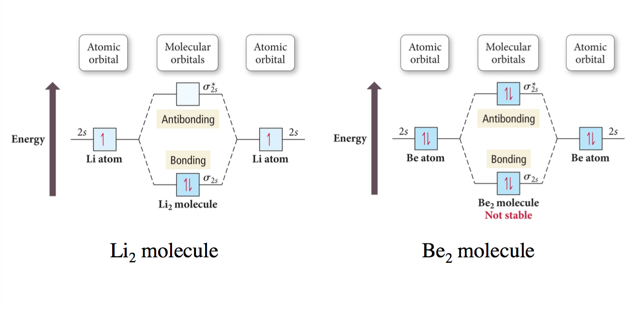
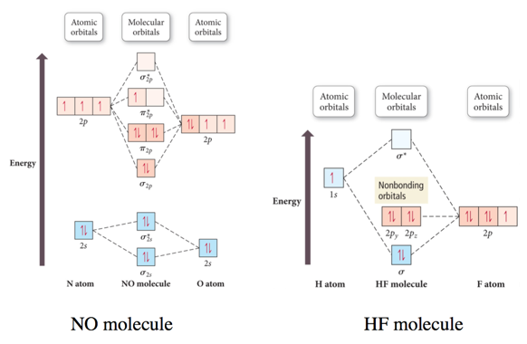
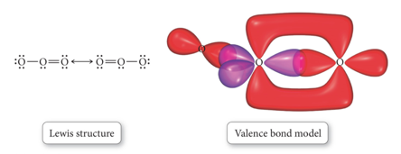
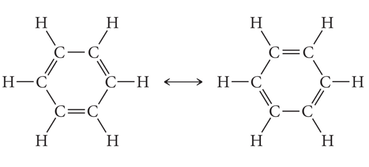
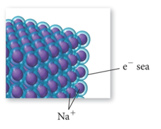
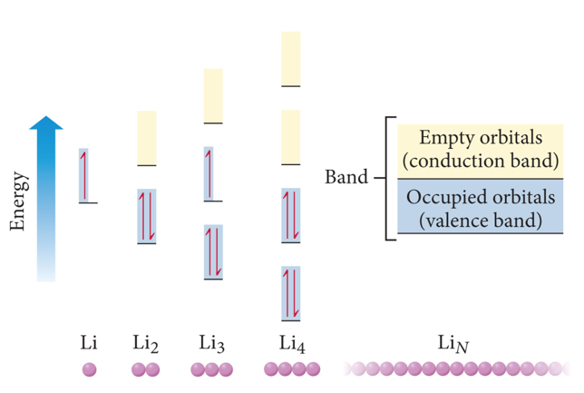

Week 9 - Day 2 (Ch 7 pt 3)
Navigate using audio
Announcements
- Audio 0:00:05.264857
- Recitation this evening
- Intends on going through problems from test 2 that gave people trouble
Clicker 1
- Audio 0:00:49.953369
- Give the hybridization for the O in OF2
- A) sp
- B) sp3
- C) sp2
- D) sp3d
- E) sp3d2
Clicker 2
- Audio 0:06:22.158125
- Give the hybridization for the S in SO3
- A) sp
- B) sp3
- C) sp2
- D) sp3d
- E) sp3d2
- Audio 0:08:06.363102
Clicker 3
- How many of the following molecules have sp2 hybridization on the central atom?
- HCN SO2 OCl2 XeCl2
- A) 4
- B) 3
- C) 2
- D) 1
- E) 0
Ex: Multi-Central Atom Lewis Structures Isomers of C2H4O
- Audio 0:13:35.404261
- Acetaldehyde: CH3CHO,
- Ethenol (aka vinyl alcohol): CH2CHOH
- oxirane (aka ethylene oxide): CH2OCH2
- Audio 0:20:19.010276
- Explaination of the Bonds to O
- (More complicated example than what you’ll see in this class)
Molecular Orbital (MO) Theory: Electron Delocalization
- Audio 0:25:00.394253
- In MO theory:
- Applies Schrödinger’s wave equation to the molecule to calculate a set of molecular orbitals
- The equation solution is estimated.
- The estimated solution is evaluated and adjusted until the energy of the orbital is minimized.
- Applies Schrödinger’s wave equation to the molecule to calculate a set of molecular orbitals
- In this treatment, the electrons belong to the whole
molecule, so the orbitals belong to the whole molecule.
- Delocalization
LCAO: Linear Combination of Atomic Orbitals
- Audio 0:28:20.033639
- The simplest guess starts with the atomic orbitals of the atoms adding together to make molecular orbitals; this is called the linear combination of atomic orbitals (LCAO) method.
- Weighted sum
- Weighted sum
- Because the orbitals are wave functions, the waves can combine either constructively or destructively.
Molecular Orbitals
- Audio 0:34:23.118169
- When the wave functions combine constructively, the resulting molecular orbital has less energy than the original atomic orbitals
- Called a bonding molecular orbital
- Designated: σ, π
- Most of the electron density between the nuclei
- When the wave functions combine destructively, the
resulting molecular orbital has more energy than the
original atomic orbital.
- Called an antibonding molecular orbital
- Designated: σ, π
- Most of the electron density outside the nuclei
- Nodes between nuclei
Interaction of 1s Orbitals

Molecular Orbital Theory
- Audio 0:35:37.151782
- Use Aufbau approach for MO’s (as we did for individual atoms)
- electrons go into lowest energy MO’s first
- pair up when they have to
- Audio 0:35:48.854160
- Electrons in bonding MOs are stabilizing.
- Lower energy than the atomic orbitals
- Electrons in antibonding MOs are destabilizing.
- Higher in energy than atomic orbitals
- Electron density located outside the internuclear axis
- Electrons in antibonding orbitals cancel stability gained by electrons in bonding orbitals.
MO and Properties
- Audio 0:36:16.115964
- Bond order = ½ (# Bonding Electrons – # Antibonding Electrons)
- Bond order = difference between number of electrons in bonding and antibonding orbitals
- Only need to consider valence electrons
- Audio 0:37:10.304038
- May be a fraction
- Higher bond order = stronger and shorter bonds
- If bond order = 0, then the bond is unstable compared to individual atoms and no bond will form.
- A substance will be paramagnetic if its MO diagram has unpaired electrons.
- If all electrons are paired, it is diamagnetic.
- Audio 0:38:35.652895
- Ex:
- Bond order = ½ (# Bonding Electrons – # Antibonding Electrons)
- Bond Order H2 = ½ (2 – 0) = 1
- Corresponds to a sigma bond
- Also coincides with Lewis models
Why Doesn’t the Molecule He2 Exist?
- Audio 0:39:48.795249

- Bond order = ½ (# Bonding Electrons – # Antibonding Electrons)
- Bond Order He2 = ½ (2 – 2) =0
- Because the bond order is zero, dihelium doesn’t exist
Why Does the Molecule He2+ Exist?
- Audio 0:41:11.115795
- Bond order = ½ (# Bonding Electrons – # Antibonding Electrons)
- Bond Order He2+ = ½ (2 – 1) =1/2
- Nonzero, so it works
Summarizing LCAO–MO Theory
- Audio 0:42:32.896527
- Molecular orbitals (MOs) are a linear combination of atomic orbitals (AOs).
- The total number of MOs formed from a particular set of AOs always equals the number of AOs in the set.
- When two AOs combine to form two MOs, one MO is lower in energy (the bonding MO) and the other is higher in energy (the antibonding MO).
- When assigning the electrons of a molecule to MOs, we fill the lowest energy MOs first with a maximum of two spin-paired electrons per orbital.
- When assigning electrons to two MOs of the same energy, Hund’s rule is followed to fill the orbitals singly first, with parallel spins, before pairing.
- The bond order in a diatomic molecule is the number of electrons in bonding MOs minus the number in antibonding MOs divided by two.
- Stable bonds require a positive bond order (more electrons in bonding MOs than in antibonding MOs).
- MOs are named by type: σ, π, with a subscript to indicate what AOs they were formed from.
Practice Problem on Bond Order H2-
- Audio 0:44:01.684960
Period Two Homonuclear Diatomic Molecules
- 
Interaction of p Orbitals


Molecular Orbital Energy Ordering

Practice Problem on Molecular Orbital Theory N2- ion. Determine the electron configuration, and whether the ion is para or diamagnetic
Molecular Orbital Energy Diagrams for SecondPeriod-p-Block Homonuclear Diatomic Molecules


Heteronuclear Diatomic Molecules and Ions
- When the combining atomic orbitals are identical and of equal energy, the contribution of each atomic orbital to the molecular orbital is equal.
- When the combining atomic orbitals are different types and energies, contributions to the MOs are different:
- The more electronegative an atom is, the lower in energy are its orbitals.
- Lower energy atomic orbitals contribute more to the bonding MOs.
- Higher energy atomic orbitals contribute more to the antibonding MOs.
- Nonbonding MOs remain localized on the atom donating its atomic orbitals.
Second-Period Heteronuclear Diatomic Molecules
- 
Practice Problem on Molecular Orbital Theory CN-
MO and Polyatomic Molecules
- When many atoms are combined together, the atomic orbitals of all the atoms are combined to make a set of molecular orbitals, which are delocalized over the entire molecule.
- Gives results that better match real molecule properties than either Lewis or valence bond theories
- 

- 
Bonding in Metals and Semiconductors
Bonding in Metals and Semiconductors
- The simplest theory of metallic bonding involves the metal atoms releasing their valence electrons to be shared as a pool by all the atoms/ ions in the metal.
- An organization of metal cation islands in a sea of electrons
- Electrons delocalized throughout the metal structure
- Bonding results from attraction of cation for the delocalized electrons.
- 
- 
Semiconductors and Band Theory
- Band Theory:
- Electrons become mobile when they make a transition from the highest occupied molecular orbital into higher energy empty molecular orbitals.
- These occupied molecular orbitals are referred to as the valence band.
- The unoccupied orbitals the conduction band.


Vocab
| molecular orbital theory | applies Schrödinger’s wave equation to the molecule to calculate a set of molecular orbitals |
| molecular orbital | orbitals which hold electrons which belong to an entire molecule |
| linear combination of atomic orbitals (LCAO) | weighted sum of orbitals which helps predicting the optimal energy/shape of orbitals (aka let’s take 10% of s and 90% of p) |
| bonding molecular orbital | molecular orbitals which have wave functions which combine constructively |
| bonding molecular orbitals result in an orbital which has (more or less?) energy than the originals | less |
| antibonding molecular orbitals | bonding molecular orbitals which have wave functions which combine destructively |
| bond order | half of the difference of the number of bonding electrons and antibonding electrons |